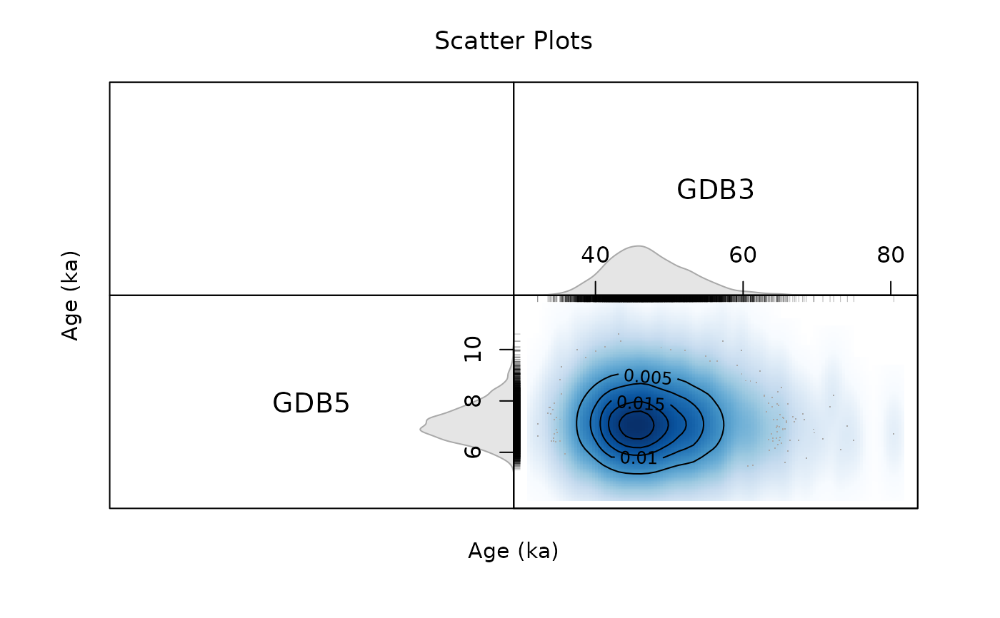
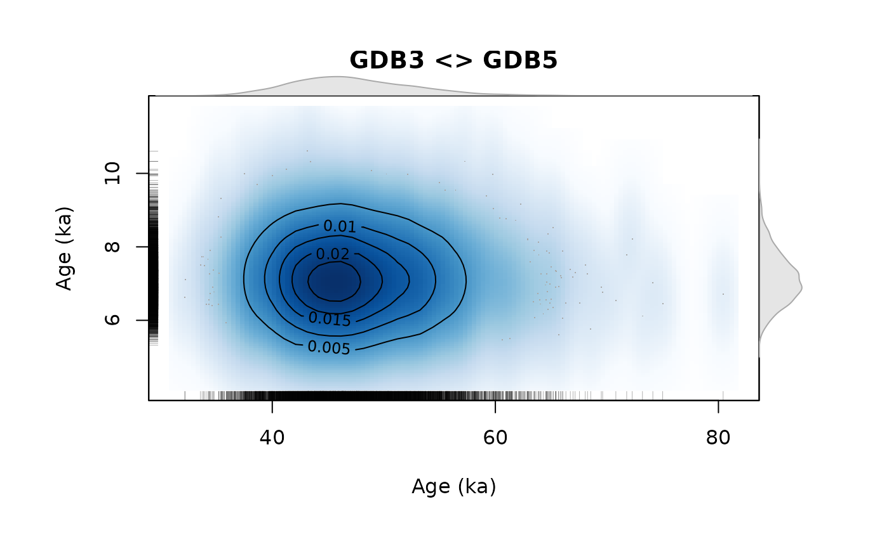

Display Scatter Plot Matrix of the Bayesian Age Results
Source:R/plot_Scatterplots.R
plot_Scatterplots.RdCreate a hexbin plot matrix (hexbin::hexplom) of age results returned by the Bayesian age calculation.
Usage
plot_Scatterplots(
object,
variables = c("A"),
sample_names = NULL,
sample_selection = NULL,
n.chains = NULL,
plot_type = "hexbin",
plot_mode = "matrix",
...
)
ScatterSamples(...)Arguments
- object
coda::mcmc.list or a data.frame (required): mcmc list objects generated by rjags::jags.model in AgeS_Computation, AgeC14_Computation or Age_OSLC14. If a data.frame is provided, only the first two columns are taken and
NAvalues are automatically removed. The function can also handleBayLum.listobjects directly for certain functions- variables
character (with default): variable to be selected for the scatter plot, e.g.,
"A". Please note that you can only select one variable at the time- sample_names
character (optional): sample names shown in the plot matrix
- sample_selection
numeric (with default): vector of samples to be plotted in the scatter matrix, e.g.,
c(1,2)will plot the first two samples,c(1,3)will plot samples 1 and 3 andc(1:3)will plot the first three samples- n.chains
integer (with default): allows to limit the number of chains shown, by default the results of all chains are plotted.
- plot_type
character (with default): switch between different plot types,
"hexbin"(the default), based on the function hexbin::hexplom andsmoothScatter(the alternative) based on a highly customised plot function using the function graphics::smoothScatter- plot_mode
character (with default): switch between a
matrixplot mode and asingleplot mode. The plot modesingleonly works forplot_type = smoothScatterand creates a single plot panel for each sample. Please note that this cannot be further combined with other par settings.- ...
further arguments to control the plot output, standard plot arguments supported are
main,xlab,ylab,xlim,ylim,cex. For additional arguments supporting a fine tuning of the plot, see details.
Value
A scatter plot based on hexbin::hexplom
Details
Additional supported plot arguments
The following table lists additional arguments supported by the function in order to fine tune the
graphical output. Such arguments, can just be added in the function call. Example, for disabling
the graphics::rug in the plot mode smoothScatter you can type plot_Scatterplots(..., rug = FALSE)
Please note that not all arguments are supported by all plot types.
| ARGUMENT | SUPPORTED BY PLOT TYPE | DESCRIPTION |
colramp | hexbin and smoothScatter | Option to define an own colour ramp, by defining an own function, e.g., function(n) heat.colors(n, alpha = 1). |
pscales | hexbin and smoothScatter | Controls the number of ticks shown on the plot axes, please note that the number works proportionally. |
bw_smoothScatter | smoothScatter | Controls the bandwidth of the smooth scatter, cf. graphics::smoothScatter |
rug | smoothScatter | enables/disables rugs |
nlevels | smoothScatter | controls the number of isolines shown (cf. graphics::contour) |
nrpoints | smoothScatter | defines the number of nrpoints to be plotted graphics::smoothScatter |
col_contour | smoothScatter | defines the colour of the contour lines |
col_nrpoints | smoothScatter | sets colour of the nrpoints in the scatter plot |
See also
Age_Computation, AgeS_Computation, AgeC14_Computation, and rjags::rjags-package packages.
Author
Sebastian Kreutzer, Institute of Geography, Ruprecht-Karl University of Heidelberg (Germany) , based on the function 'ScatterSamples()' by Claire Christophe, Anne Philippe, Guillaume Guérin
How to cite
Kreutzer, S., Christophe, C., Philippe, A., Guérin, G., 2024. plot_Scatterplots(): Display Scatter Plot Matrix of the Bayesian Age Results. Function version 0.3.2. In: Christophe, C., Philippe, A., Kreutzer, S., Guérin, G., Baumgarten, F.H., Frerebeau, N., 2024. BayLum: Chronological Bayesian Models Integrating Optically Stimulated. R package version 0.3.3.9000-13. https://CRAN.r-project.org/package=BayLum
Examples
data(AgeS,envir = environment())
##hexbin
plot_Scatterplots(
object = AgeS$Sampling,
sample_names = c("GDB5", "GDB3"),
sample_selection = c(1,2)
)
##scatter smooth (matrix)
plot_Scatterplots(
object = AgeS$Sampling,
sample_names = c("GDB5", "GDB3"),
sample_selection = c(1,2),
plot_type = "smoothScatter")

##scatter smooth (single)
plot_Scatterplots(
object = AgeS$Sampling,
sample_names = c("GDB5", "GDB3"),
sample_selection = c(1,2),
plot_type = "smoothScatter",
plot_mode = "single")
